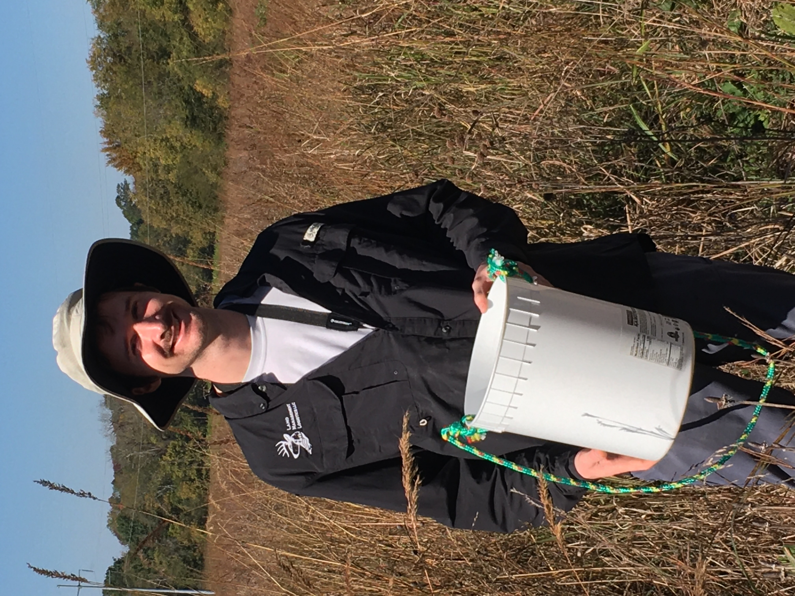

Go Home
Work and Volunteer experience
Land Management Logistics 2021-2022
 In the summer of 2021, I joined Land Management Logistics as a seasonal biology field technician working for a stream restoration and conservation project under Jeronimo Silva. We were documenting the species occurrence of the Eastern Hellbender Salamander, Tennessee's largest salamander that has experienced severe declines due to habitat degradation, siltation, aquatic contaminants, and infectious diseases. We conducted snorkle surveys, pebble counts, macroinvertebrate surveys, and vegetation surveys to help develop management and conservation plans for this threatened species across eastern TN and southern VA. Below you can see Dr. Michael Freake of Lee University administering a pit tag on a Hellbender we caught at Roan Mountain State Park, TN and a juvenile hellbender getting ready for measurements! Click the button below if you'd like to visit the website for Land Mangement Logistics.
In the summer of 2021, I joined Land Management Logistics as a seasonal biology field technician working for a stream restoration and conservation project under Jeronimo Silva. We were documenting the species occurrence of the Eastern Hellbender Salamander, Tennessee's largest salamander that has experienced severe declines due to habitat degradation, siltation, aquatic contaminants, and infectious diseases. We conducted snorkle surveys, pebble counts, macroinvertebrate surveys, and vegetation surveys to help develop management and conservation plans for this threatened species across eastern TN and southern VA. Below you can see Dr. Michael Freake of Lee University administering a pit tag on a Hellbender we caught at Roan Mountain State Park, TN and a juvenile hellbender getting ready for measurements! Click the button below if you'd like to visit the website for Land Mangement Logistics.


Tennessee River Gorge Trust 2022
In the summer of 2022, I interned with the Tennessee River Gorge Trust in Chattanooga, TN. During their summer bird banding days, I gained experience extracting birds out of mist nets, banding birds, and scribing. We spent a day with TDEC along Highway 41 conducting vegetation monitoring surveys for the endangered Large Flowered Skullcap. The trust was also finishing up a Kingfisher project where they were studying the yearly movement patterns of Kingfishers using gps tags, and we assisted with acoustic callback surveys along the banks of the TN river. Other duties included welding and campsite/trail maintenance. Below you can see a Black-and-white Warbler(Mniotilta varia) we banded, Large Flowered Skullcap(Scutellaria montana), a few photos of us welding together a box to house acetylene torches for future projects, some trail maintenance, and a beautiful Green Salamander(Aneides aeneus) found at the Bird Lab!


Tennessee River Gorge Trust 2023
 The following summer of 2023, I was invited back to lead two new interns in the daily research and maintenance projects of the trust. While I was there, we got to install and set up Chattanooga's second Motus station along the Tennessee River for an upcoming nation wide Wood Thrush(Hylocichla mustelina) project. Motus is an international wildlife tracking system used to track birds, bats, and insects and can better inform researchers and managers on the movements of species most at risk. 3-D printing Wood Thrush decoys and painting them was a part of targeted surveys carried out by the trust. Along with bird banding duties, we also conducted preliminary environmental vegetation surveys for a Cumberland Plateau Mountain Bog with the South Eastern Grasslands Initiative. Other days were spent taking out crews from the Chattanooga Zoo or Chattanooga Outdoors and educating them on wildlife conservation. Among the research projects, throughout the summer we gained experience building wooden camping tables, welding a box for our motus station battery, and driving pontoon and jon boats as well. Below are some photos of a banded juvenile Eastern Bluebird(Sialia sialis), a Wood Thrush decoy, Virginia Chain Fern(Woodwardia virginica) along with Barking Tree Frogs(Hyla gratiosa) found in the mountain bog, some prep for our welding, and the intern crew admiring the finished Motus station. Also, click the button below if you'd like to visit the Tennessee River Gorge Trust's website!
The following summer of 2023, I was invited back to lead two new interns in the daily research and maintenance projects of the trust. While I was there, we got to install and set up Chattanooga's second Motus station along the Tennessee River for an upcoming nation wide Wood Thrush(Hylocichla mustelina) project. Motus is an international wildlife tracking system used to track birds, bats, and insects and can better inform researchers and managers on the movements of species most at risk. 3-D printing Wood Thrush decoys and painting them was a part of targeted surveys carried out by the trust. Along with bird banding duties, we also conducted preliminary environmental vegetation surveys for a Cumberland Plateau Mountain Bog with the South Eastern Grasslands Initiative. Other days were spent taking out crews from the Chattanooga Zoo or Chattanooga Outdoors and educating them on wildlife conservation. Among the research projects, throughout the summer we gained experience building wooden camping tables, welding a box for our motus station battery, and driving pontoon and jon boats as well. Below are some photos of a banded juvenile Eastern Bluebird(Sialia sialis), a Wood Thrush decoy, Virginia Chain Fern(Woodwardia virginica) along with Barking Tree Frogs(Hyla gratiosa) found in the mountain bog, some prep for our welding, and the intern crew admiring the finished Motus station. Also, click the button below if you'd like to visit the Tennessee River Gorge Trust's website!


Volunteer work 2023
 Over the past year, I have volunteered with the Bird Program at the Warner Parks Nature Center. My volunteer duties include assisting with bird banding days, Motus tracking tagged Thrush species with handheld trackers, targeted Northern Saw-Whet Owl(Aegolius acadicus) banding, and assisting with various duties as necessary. It has been a joy to experience working with the wonderful people there, and they have some amazing research they're conducting on a variety of species from Purple Martins(Progne subis) and Eastern Bluebirds to Ruby Throated Hummingbirds(Archilochus colubris) and migrating Thrush species. I have also volunteered with the Southeastern Grasslands Initiative on a few events where we collect the seeds of native species like Little bluestem(Schizachyrium scoparium) or Indiangrass(Sorghastrum nutans) to have them delivered back to their headquarters to be processed and shipped out for native seedbanks. Below you can see the first Purple Finch(Haemorhous purpureus) the Warner parks banded for the 2023 winter season and some Splitbeard bluestem(Andropogon ternarius) at the Google prairie in Clarksville, TN. Click the buttons below if you'd like to learn more about the Warner Parks Bird Program or SGI.